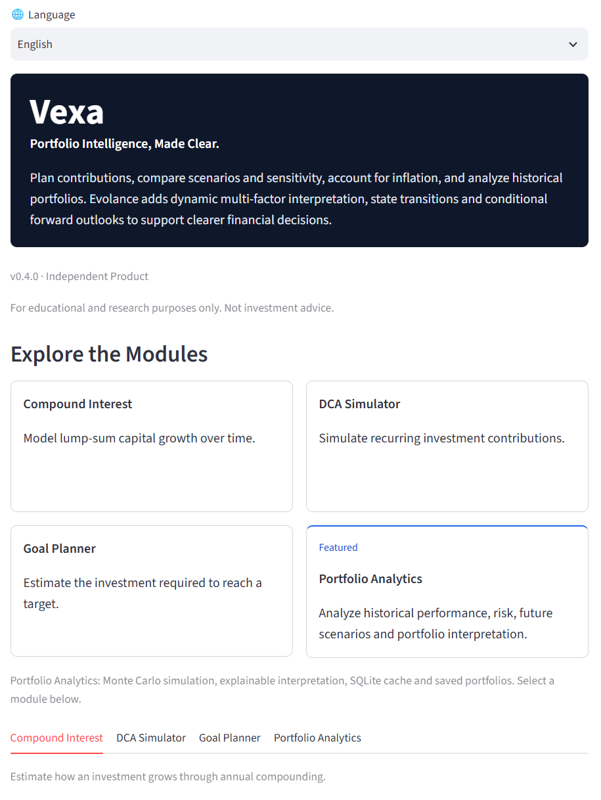
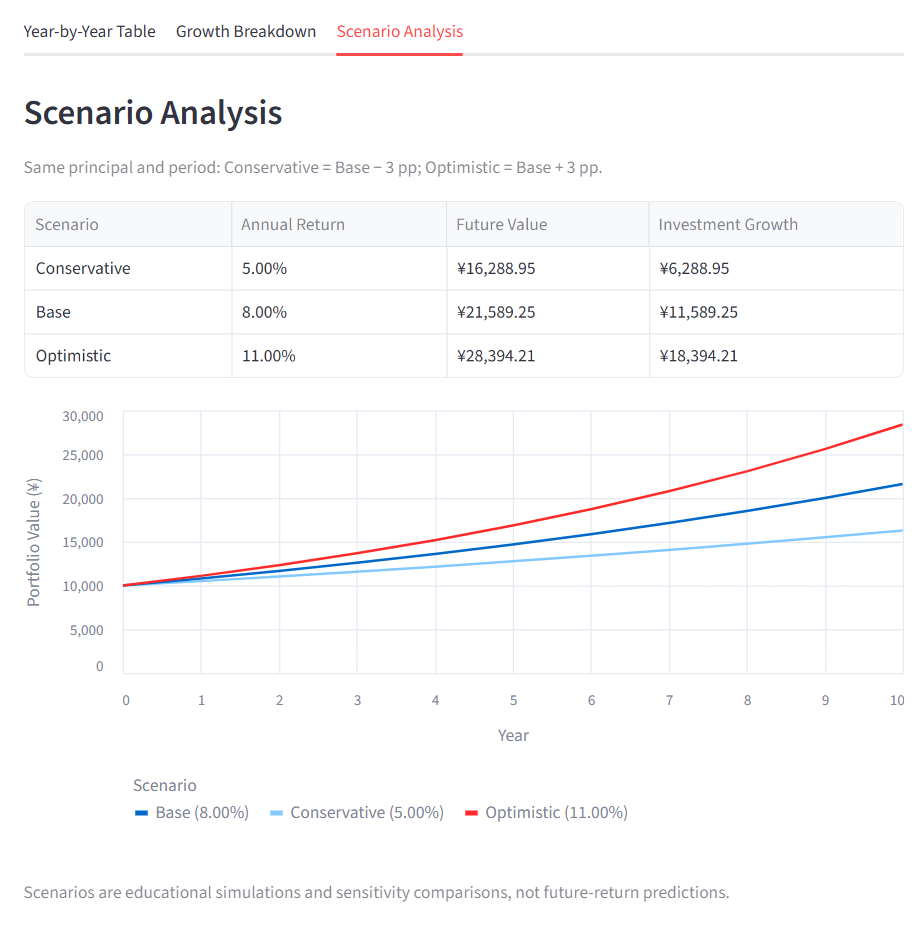
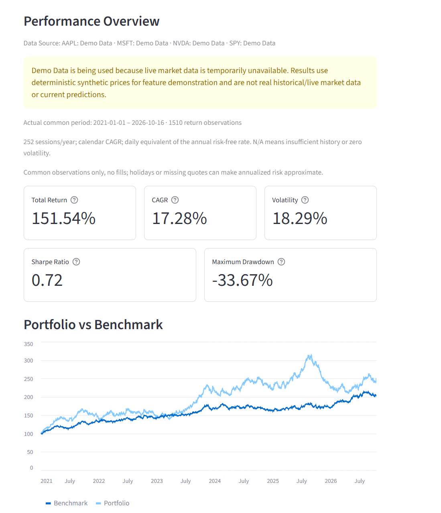
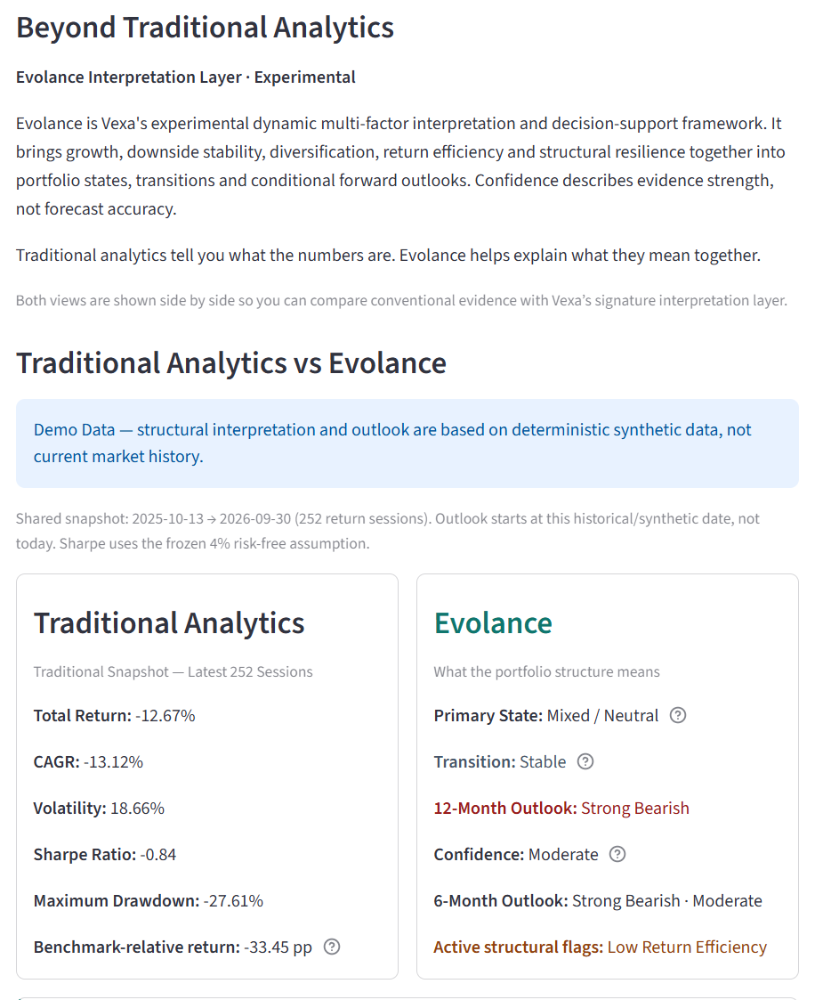

Financial planning
Compound interest, DCA and goal planning, with purchasing-power and contribution-sensitivity analysis.
See the workspacePortfolio Intelligence,
Made Clear.
Intelligent Financial Analysis & Decision Support Platform
Vexa combines financial planning, scenario analysis, historical portfolio analytics and the experimental Evolance interpretation framework to turn complex financial information into clearer decision support.
For educational and research purposes only. Not investment advice.
01 / The product
Vexa is an independent financial analytics and decision-support product designed to explore how financial planning, historical data, scenario analysis and structured interpretation can work together in one workflow.
Built from an interest in finance, data and explainable analytical systems, it connects working tools into a usable product. English and Chinese are supported throughout the application.
02 / The question behind Vexa
A return, a drawdown and a simulated outcome answer different questions. Vexa explores how connecting them can make a financial analysis easier to follow.
03 / Core capabilities
Compound interest, DCA and goal planning, with purchasing-power and contribution-sensitivity analysis.
See the workspaceCompare Conservative, Base and Optimistic assumptions side by side to understand how inputs affect long-term outcomes.
Compare assumptionsTotal Return, CAGR, volatility, Sharpe Ratio and Maximum Drawdown, with benchmark growth and correlation analysis.
Explore the evidence1-, 3- and 5-year GBM simulations with P10/P50/P90, scenario paths and simulated loss probability under fixed assumptions.
Read the assumptionsAn experimental multi-factor interpretation layer for portfolio state, structural pressure, transitions and conditional outlooks.
Understand EvolanceEducational rules connect risk preference, investment horizon and goals to available historical and simulated evidence.
Try portfolio guidance04 / Inside the product
Four views from the v0.4.0 interface. Open any screenshot to inspect it at full size.
Planning and portfolio analysis share one bilingual workspace. Choose a module, enter your assumptions and inspect the results.
Independent product. Transparent inputs. Explanations alongside outputs.

Compare Conservative, Base and Optimistic assumptions to see how changing returns affects long-term outcomes.
These are educational sensitivity comparisons, not forecasts.

Evaluate performance, risk and benchmark-relative behavior through five core metrics and normalized portfolio growth.
Demo Data shown. This capture uses deterministic synthetic prices, not real investment performance.

Compare conventional metrics with an experimental interpretation of state, transition, structural flags and 6/12-month conditional direction.
Experimental · Demo Data. Direction and confidence in this example are not proof of forecasting accuracy.

05 / The interpretation framework
Experimental / ResearchA dynamic multi-factor interpretation and decision-support framework.
Traditional analytics tell you what the numbers are. Evolance explores what they may mean together.
Five-dimensional scoring organizes growth, downside stability, diversification quality, return efficiency and structural resilience. Monthly observations track their balance and interaction over time.
Frozen rules identify portfolio state, independent structural flags and state transitions. Conditional 6- and 12-month direction comes from a GBM distribution; structure affects interpretation and confidence, not simulation drift or volatility.
Confidence reflects evidence strength, not forecast accuracy.
High, Moderate and Low are ordered labels, not calibrated success probabilities. Synthetic Demo Data caps confidence at Moderate. Insufficient evidence is disclosed.
A limited historical walk-forward study did not establish predictive superiority. Outputs are experimental and conditional on model assumptions.
Read methodology & limitations06 / Technology & engineering
Financial knowledge, data engineering and transparent rules form the analytical core. The product separates calculations, data access, interpretation and presentation.
Data availability is explicit. SQLite cache → Yahoo Finance → labeled synthetic Demo Data. If fallback is needed, the portfolio and benchmark switch together. The synthetic universe is AAPL, MSFT, NVDA and SPY.
This showcase is static HTML/CSS with local images. It makes no market-data requests and remains readable independently of the live app. Community Cloud may need a wake-up when you launch the demo.
07 / Testing & reliability
Testing covers financial calculations, application behavior, localization, data handling and regression protection, including deterministic simulation and frozen research integrity.
Published v0.4.0 showcase baseline: complete offline suite, with mocked market providers. These are software test results, not investment-performance or predictive-accuracy measures.
Inspect the tests08 / Development journey
Vexa began as a lightweight financial planning experiment and gradually expanded into scenario analysis, historical portfolio analytics and an experimental interpretation framework.
The project grew from an interest in how AI-era analytical thinking, data-driven methods and financial knowledge could be translated into a practical decision-support product.
Connect finance, data and clearer analytical decisions.
Structure assumptions, evidence and interpretation rules.
Build calculators, data workflows and comparative views.
A working, tested bilingual product prototype that can be explored publicly, with research and development ongoing.
Explore Vexa
Try the interactive workflow or look through the implementation, research boundaries and tests.